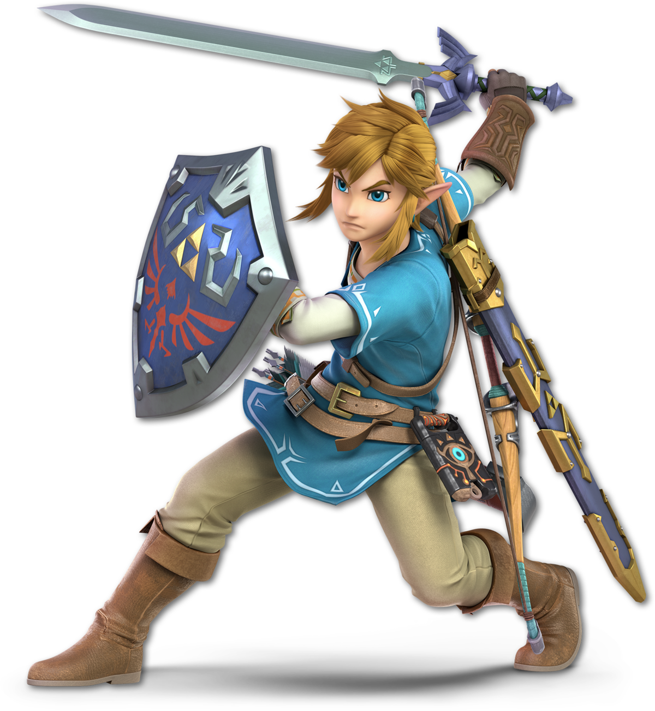

Link - Zelda Link´s Awakening
Despierta en una isla desconocida y con muchos misterios

De mis juegos preferidos que pude jugar en un emulador de Gameboy Color, con muchas referencias a Mario
Despierta en una isla desconocida y con muchos misterios
De mis juegos preferidos que pude jugar en un emulador de Gameboy Color, con muchas referencias a Mario
Despierta 100 años después de que Ganon azotara a Hyrule
Mi juego preferido de la saga con un link vérsatil y con multiples armas, vestimentas y aventuras por experimentar
Se embarca en una aventura en miniatura

De los mejores juegos de Gameboy Advance, con un estilo bellísimo y una excelente jugabilidad